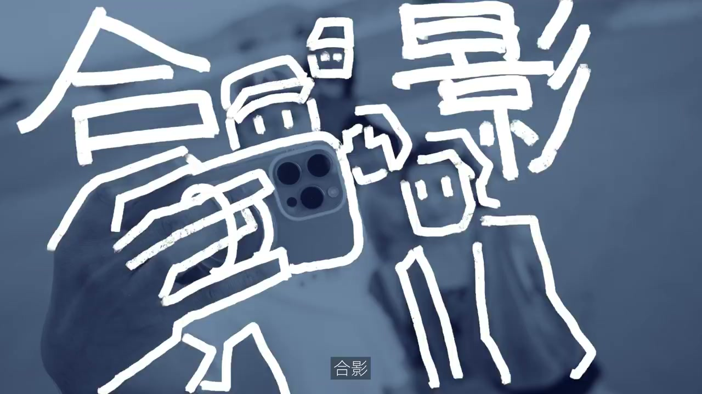
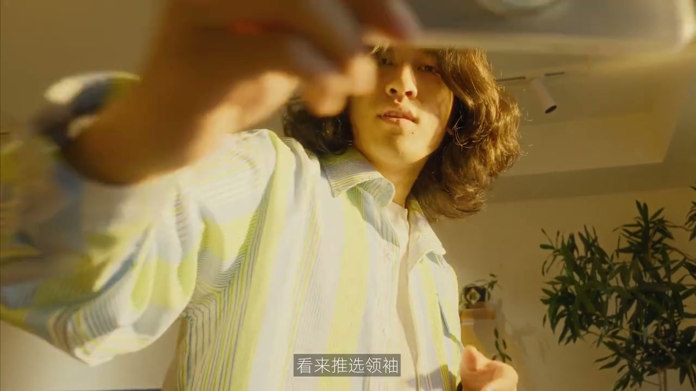
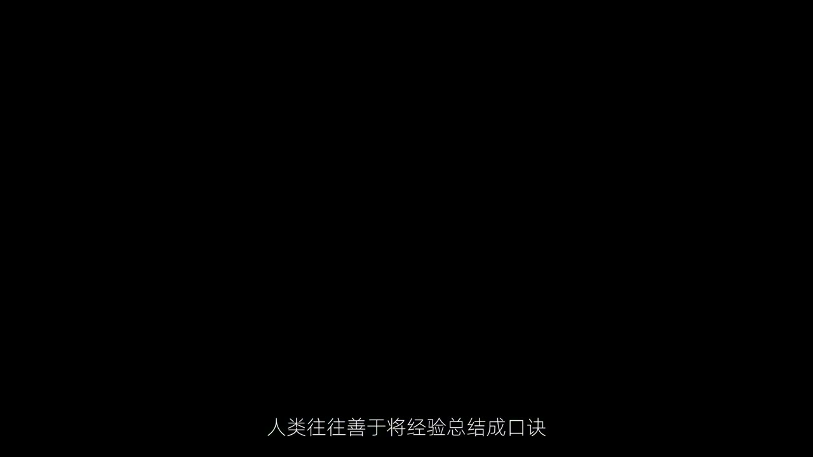
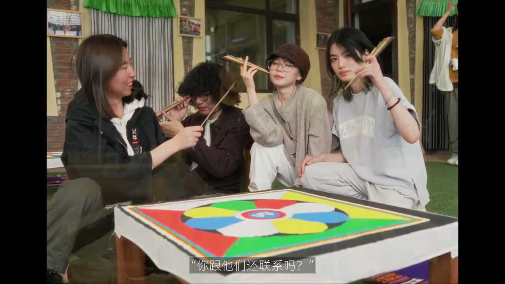

01
中文
合影是人类社交活动中至关重要的一环。
EN
The group photo is a vital part of human social activity.
表达提示vital social ritual（社交关键）

Scene English · 拍摄 · 合影哲学
How to Take Group Photos Like a Human
🎧 语音讲解
The evolution of group photos: the group p…
情境合影是社交关键，角度比平视更生动。
合影是人类社交活动中至关重要的一环。
The group photo is a vital part of human social activity.
表达提示vital social ritual（社交关键）
他们发现了换个角度好像比平视更生动一点。
They found another angle seems livelier than eye level.
表达提示another angle（换个角度）
vital social ritual（社交关键
another angle（换个角度

Mantras are born: apparently queuing up is…
情境把合影经验总结成口诀。
人类往往善于将经验总结成口诀。
Humans excel at condensing experience into mantras.
表达提示turn to mantras（总结口诀）
turn to mantras（总结口诀

Learning from art: the renaissance hits ha…
情境从专辑封面和影视作品中汲取灵感。
他们开始从专辑封面和影视作品中汲取灵感。
They begin drawing inspiration from album covers and film works.
表达提示inspiration from art（艺术中汲取）
进化持续发生，人类开始向高处发展。
Evolution continues; humans begin heading for higher ground.
表达提示head for higher ground（向高处发展）
inspiration from art（艺术中汲取）
The essence of group photos: have you ever…
情境拍的是故事的瞬间与生命力。
当我们在拍合影的时候，我们到底在拍什么？
When we take group photos, what exactly are we capturing?
表达提示what we capture（拍什么）
我们拍的是故事的瞬间，我们拍的是值得纪念的时刻。
We capture the moment of a story—moments worth remembering.
表达提示story moments（故事瞬间）
好起来动起来，需要生命力。
Get up and move—it needs vitality.
表达提示vitality（生命力）
what we capture（拍什么
story moments（故事瞬间
The meaning: the group photo is a vital pa…
情境聚散情绪羁绊定格在倒数的瞬间。
聚散、情绪、羁绊，都被定格在了倒数到零的那一刻。
Partings, emotions, bonds—all frozen at the moment the countdown hits zero.
表达提示frozen at zero（定格为零）
有的人也许几年都不会自拍一张合影，甚至是唯一回看过去自己的窗口。
Some may not group-selfie in years—it's their only window to the past self.
表达提示window to the past（回看过去的窗口）
frozen at zero（定格为零

The magnetic phone case: I used to dodge a…
情境磁吸手机壳让你也能入镜。
以前我总以帮大家拍为借口，逃避出镜，现在没这个机会了。
I used to escape the frame by taking the photos—no more excuses now.
表达提示no more excuses（没机会逃避）
随时随地一放就可以拍摄，任意角度都能停住。
Place it anywhere and shoot; any angle holds.
表达提示any angle holds（任意角度）
当值得记录的时刻发生时，一部手机加一块磁吸手机壳，就是最让你心情舒畅的选择。
A phone plus a magnetic case is the most comfortable choice for your mood.
表达提示comfortable choice（心情舒畅的选择）
no more excuses（没机会逃避
any angle holds（任意角度
说合影重要
说角度生动
说经验口诀
说拍的本质
说磁吸自拍
合影别总平视。
前后错落比站一排好。
合影需要动起来。
别总在镜头后面。
合影定格聚散羁绊。